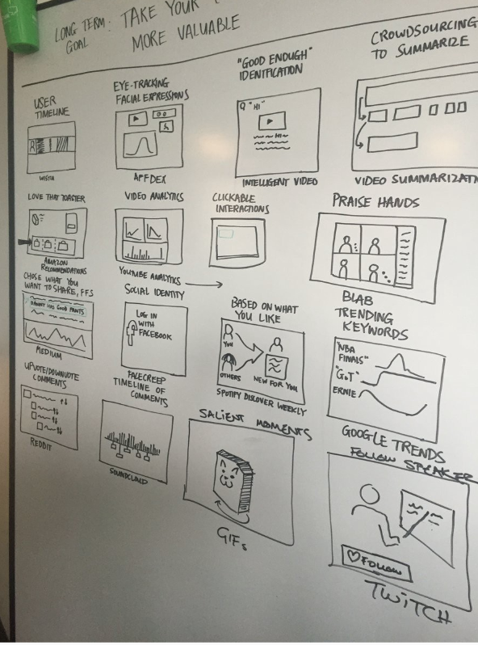
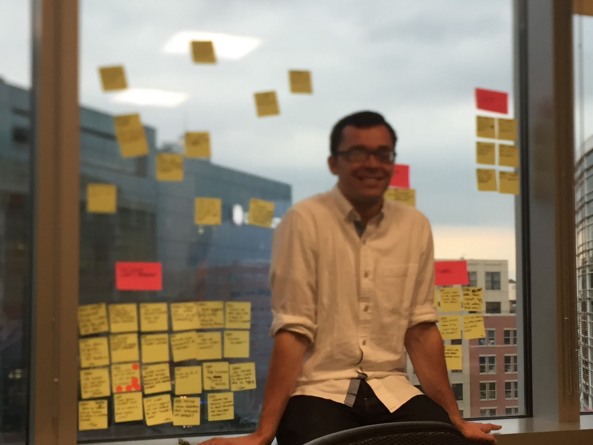

A design sprint to rapidly test our hypotheses of what our users really value
ReadyTalk’s platform is often used by marketers to run lead generation webinars. A lot goes into holding such events, from scheduling the events, planning the content, running the event itself, and following up with prospects afterwards.
The product team had a few ideas of new features that they thought would add a lot of value to the product. But before investing in what would be an expensive development cycle, they turned to me and our new dedicated Innovation team to help. We spent a week doing a design sprint to be sure we were focusing on the right problem to fix (with the right solution!)
Hypothesis: We believe that marketers want a way to repurpose their webinar content because the cost of creating content (running webinars, writing white papers and blog posts) is expensive.
You can read more about this project in a blog post I wrote over on Medium: "How Jobs to be Done Saved Us From a Costly Mistake".
Our dedicated innovation team conducted a design sprint, with the manager of the Webinar line of business serving as our "Decider". She did not actively participate during the week, which was a change we made to further design sprints we ran for other teams. Instead, we were dedicated to the week's activities, and then she would come in to review and give feedback on our progress.
The Monday activity of mapping the process was helpful for our team, as we brought in experts as well as customers to walk us through their work. Once everyone in the sprint had a shared understanding of the workflow, we honed in on the time immediately after a marketer had held their webinar.
Tuesday is always my favourite day of design sprints. In the morning, everyone brought different related concepts and sources of inspiration. Coming together to share these different thoughts was wonderful: the team identified some really interesting patterns from different industries and tools to consider in our concepts.
Tuesday afternoon we sketched. The rapid-fire "Crazy-Eights" activity was torturous for some members of the team who're extremely detail-oriented, but it forced them to refine their thoughts down to the most salient and significant features.
After facilitating and participating in numerous design sprints, I'm still always surprised on "decision" day. Too often, decisions are made based on what would be easy or realistic to develop and deliver - as a final product. It's as though the team has forgotten that the purpose of a design sprint is to explore possibilities, not to start designing the final product.
When facilitating a design sprint, I see my role at this stage to push people to choose the unknowns. The goal of a design sprint is to learn, and so you'll get the most out of it if you ask the big questions. During this design sprint, our Decider did a great job at picking concepts she hadn't previously considered, with a goal to maximize her learning during the week.
We conducted our interviews with users of our product, as well as those of competitive products. We didn't want to risk biasing our results based on our existing product offering. One of our MBA interns conducted the interviews while the rest of the team jotted down notes on sticky notes and organized them per product feature and sentiment.
The toughest part of a design sprint is the synthesis at the end. Everyone is exhausted and overwhelmed with information. While things were fresh in our minds, we did a high-level "WOW or MEH" rating for different aspects of the concept, and gathered our notes for later further analysis.
While the official design sprint process wrapped up Friday afternoon, our team continued with the project the net week, to further synthesize our findings, and write up recommendations and next steps.
They viewed this as the most enjoyable aspect of their job, and took great pride in it
Interview participants had a strong negative response to the auto-editing feature
They were skeptical that the video clips would be “production ready” and felt they’d still need or want to edit them manually
Participants valued the ease of notification
Delighted with the comparisons against other events (attendance, engagement)
Expressed strong sentiment that this was a difficult, tedious part of their job they’d like automated
I wish it existed, so hurry up!
Three big results came out of this research:
Number three was a huge win for my team, as it helped our internal customers understand how we could be beneficial to them. As in many product organizations, they were very often focused on optimizing how best to build things, and through a better understanding of the customers’ Jobs to be Done, we were able to provide the context and direction to help them understand what best to build.
Often when we look at product successes, we look at launches. In this case, we reveled in what we had saved the company in opportunity cost. The feature that we had planned would have been extremely expensive, and by talking to our customers and better understanding what was important to them, we were able to better invest our time and resources elsewhere.
© . All Rights Reserved, Andrea Hill.